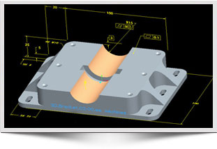

MBE Lessons Learned

In recent years the government and industry have begun to adopt the MBE process in ernest. As a result there have been many lessons learned. Listed below are just a few:
- Annotating the models that must be created to drive the design, as they are created, helps to avoid the extra time needed at the end of a project to create a drawing.
- MIL-STD-31000A contains a reference model organization schema for a uniform exchange of technical data. If a company utilizes another schema, the model can still be accepted. The key is to organize the Product Manufacturing Information (PMI) (i.e., dimensions, tolerances and notes) in a way that they can be easily read by both humans and computers.
- MIL-STD-3046 is a recently revised standard regarding configuration management. Configuration management is even more vital in MBE due to the complexity of model data and all of its deriviatives.
- A Product Lifecycle Management (PLM) tool is necessary to maintain data integrity and to ease the configuration management burden.
- The quality of the model from both a geometric and annotated point of view is vital. Without high model quality the ability to reuse the data downstream can be severally hampered. Appendix C of MIL-STD-31000A provides guidance in this area.
- The master model is transformed into many derivative copies for use by downstream customers. Verifying the qualities of these derivatives are just as important as verifying the master data.
- When agreeing on delivering a MBE based technical data package it is vital to agree upfront on the mechanism for delivery. This is because traditional file based transfers like CDs do not provide the product structure or references needed to reconstruct the data set outside of its native environment.
- We invite you to share any lessons learned you may have with us; just see the Contact Us page for a submittal form. Remember that anything you can share will help others on the same journey!